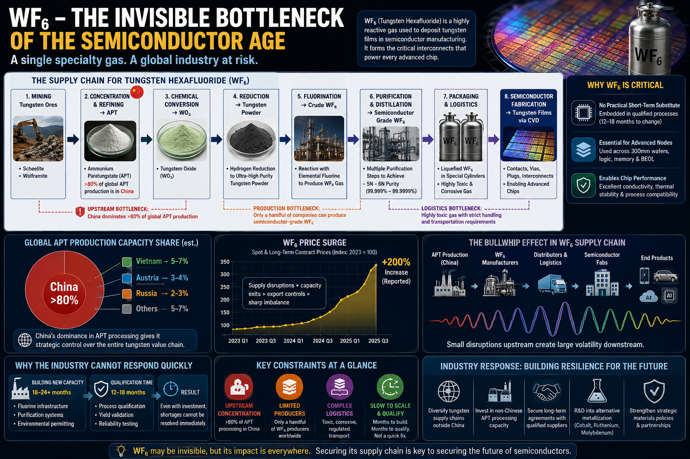

WF₆ - The Invisible Bottleneck of the Semiconductor Age
How a single specialty gas quietly controls the speed, cost, and resilience of the global chip supply chain.
There is a quiet irony in modern technology: the most advanced systems on Earth - AI accelerators, 3nm processors, high-bandwidth memory stacks - depend on materials so obscure that even most engineers outside fabrication never see them. One of the most consequential among them is tungsten hexafluoride (WF₆), a corrosive, invisible gas that has become a structural constraint on the entire semiconductor industry.

To understand its importance, imagine a world where chip manufacturing is a vast, synchronized orchestra. Lithography gets the spotlight. EUV scanners are the virtuoso performers. But WF₆ is not an instrument in the front row - it is the tuning system hidden beneath the stage. When it falters, the entire performance drifts out of harmony. And right now, that system is under strain.
The Material Nobody Sees - But Everything Depends On
Tungsten hexafluoride (WF₆) is a highly reactive gas used almost exclusively in semiconductor fabrication to deposit tungsten metal films via Chemical Vapor Deposition (CVD). These tungsten layers form the microscopic electrical highways inside chips: contacts, vias, plugs, and interconnects that link billions of transistors across multiple layers.
Without WF₆, modern integrated circuits simply cannot be completed.
It is not a "nice-to-have" material. It is a structural necessity embedded deep in back-end-of-line (BEOL) manufacturing steps across 300 mm wafer production lines used for logic chips, memory devices, and advanced CMOS nodes.
Even as alternative materials like cobalt and ruthenium are being explored, tungsten remains dominant because it delivers a rare combination of conductivity, thermal stability, and process compatibility that fabs can trust at scale.
A Hidden Supply Chain with a Single Weakest Link
The journey of WF₆ begins far from semiconductor fabs - in tungsten mines producing scheelite and wolframite. These ores are refined into ammonium paratungstate (APT), then chemically transformed into tungsten oxide, reduced into powder, and finally fluorinated into WF₆ under tightly controlled industrial conditions.
Each step is specialized. Each step is fragile. And each step narrows the field of global suppliers.
The most critical choke point is APT production, where over 80% of global capacity is concentrated in China. This concentration means that even though tungsten is mined globally, the real control point sits in chemical processing rather than raw extraction.
From there, downstream dependencies spread across Japan, United States, and parts of Europe - all of which still rely heavily on upstream Chinese refining.
The result is a supply chain that appears diversified on paper but is structurally centralized in practice.
When One Link Breaks, Everything Feels It
The current WF₆ shortage is not the result of a single failure, but a convergence of pressures:
- Upstream constraints in APT processing
- Limited number of WF₆-grade fluorine chemistry producers
- Tightening logistics for highly toxic, reactive gases
Because WF₆ reacts violently with moisture to form hydrogen fluoride, transportation requires specialized cylinders, safety systems, and certified hazardous materials handling. This makes scaling distribution as difficult as scaling production.
Recently, additional stress entered the system when several major Japanese producers accounting for roughly a quarter of global WF₆ output reduced capacity or exited parts of the market. The immediate consequence was predictable: supply tightened, pricing surged, and long-term contracts locked in scarcity.
Reported price increases exceeding 200% reflect not speculation, but structural imbalance.
Why the Industry Cannot Simply "Build More"
In most commodity markets, shortages trigger expansion. WF₆ does not behave like a normal chemical market.
New production capacity requires:
- Fluorine gas infrastructure at industrial scale
- Ultra-high-purity purification systems
- Strict environmental permitting
- Multi-year process qualification for semiconductor use
Even if investment begins today, meaningful output typically takes 18-24 months to materialize.
But the semiconductor industry operates on a different clock. A fab cannot simply switch suppliers of WF₆ without requalifying the entire process, often a 12-18 month validation cycle to protect yield and device reliability.
This creates a dangerous mismatch: supply cannot scale quickly, and demand cannot easily shift.
The Bullwhip Effect in Semiconductor Materials
What makes WF₆ particularly important is not just its scarcity, but its position in the value chain. Small disruptions upstream amplify dramatically downstream.
A modest reduction in APT availability in China becomes a multi-quarter constraint for fabs in United States and Japan. That, in turn, affects chip allocation for automotive, cloud infrastructure, and AI hardware globally.
This is the classic bullwhip effect, but compressed into semiconductor-grade chemical logistics, where delays are measured not in shipments, but in wafer cycles.
Strategic Reality: A Material Becomes Geopolitics
WF₆ illustrates a broader shift in the semiconductor industry: the realization that supply chain security is no longer just about fabs or lithography tools, but about invisible industrial chemistry.
The material sits at the intersection of:
- Critical minerals policy
- Advanced chemical engineering
- Semiconductor yield optimization
- Geopolitical supply chain concentration
In other words, WF₆ is no longer just a process gas. It is a strategic input.
What Comes Next
The industry response is already forming:
- Diversification of tungsten processing outside China
- Investment in alternative APT production capacity in Europe and North America
- Long-term supply contracts with qualified WF₆ producers
- Accelerated research into alternative metallization materials
But none of these solutions operate on short timelines. They require capital, engineering maturity, and above all, time.
Until then, WF₆ remains a quiet constraint embedded in the global digital economy. Every AI model trained, every smartphone shipped, every data center expanded still depends on a material most users will never hear about.
Closing Perspective
Semiconductor history is often told through breakthroughs in transistor scaling and lithography. But the real story is increasingly about materials: hidden, specialized, and fragile.
WF₆ is one of those materials.
And its message is simple: in the semiconductor era, control is not only defined by who designs the chips, but by who controls the chemistry that makes those chips possible.
References
- International Tungsten Industry Association (ITIA). Tungsten: Properties, Applications and Supply Chain. International Tungsten Industry Association, 2024. https://www.itia.info/
- SEMI. Materials Market Data and Semiconductor Manufacturing Supply Chain Reports. SEMI Industry Association, 2024-2025. https://www.semi.org/
- Linde plc. Electronic Materials - Tungsten Hexafluoride (WF₆) for Semiconductor Manufacturing. Linde Electronics, accessed 2025. https://www.linde.com/
- U.S. Geological Survey (USGS). Mineral Commodity Summary: Tungsten 2025. U.S. Department of the Interior, 2025. https://www.usgs.gov/centers/national-minerals-information-center/mineral-commodity-summaries
Comments and reactions